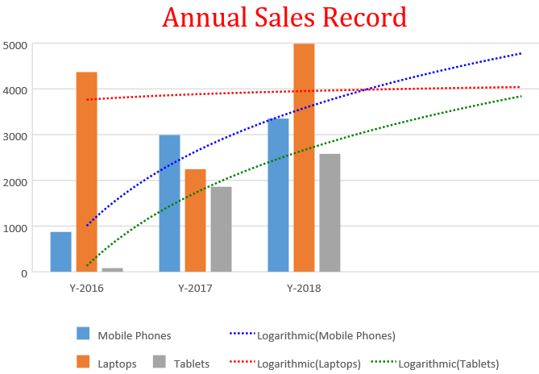
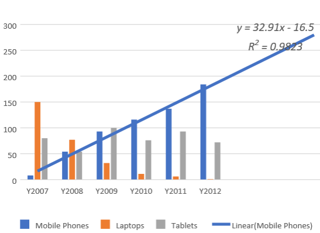
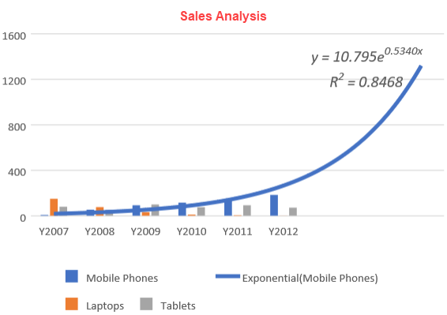
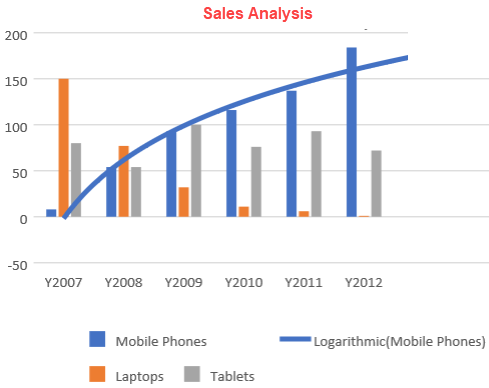
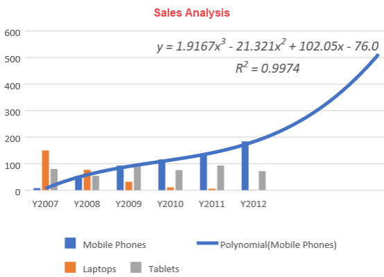
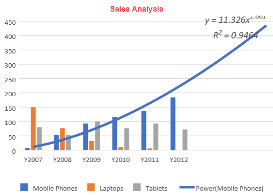
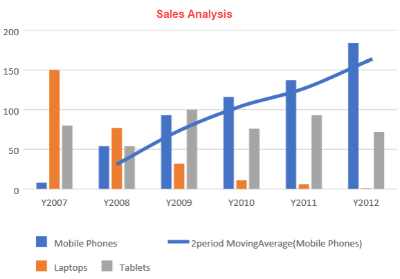

SpreadJS allows users to add trendlines to charts while visualizing data in the spreadsheets.
A trendline, also called as a line of best fit, is an additional line in a chart that indicates the slope (trend) in a particular data series to help users in quickly analyzing the overall trend (even when there are ups and downs in your data points).
Adding trendlines to charts can prove to be a great analytical tool for your organization that you can use to show data movements over a period of time or simply depict correlation between two variables.
Trendlines are extremely helpful while:
Example: The following screenshot depicts the annual sales record for three different products- Mobile Phones, Laptops, and Tablets, via using different types of trendlines in the chart.

The following table describes the various types of the trendlines supported while working with charts in SpreadJS.
| Trendline Type | Description | Example | ||||||||||
|
Linear Trendline |
A linear trendline is a best fit straight line that shows how values in a data series increase or decrease at a steady rate and provides future approximations for the data in the chart. The data is linear, if the data pattern resembles a line. Equation -: y=mx + b where m is the slope and b is the intercept. |
 | ||||||||||
|
Exponential Trendline |
An exponential trendline is a best-fit curved line that is most useful when data values rise(increase) or fall(decrease) at increasingly higher rates, and then level out. Equation -: y=cebxwhere c and b are constants and e is the base of the natural logarithm. Note: This trendline can only be used with positive numbers. Users cannot create an exponential trendline if the data contains zero or negative values. |
 | ||||||||||
|
Logarithmic Trendline |
A logarithmic trendline is a best-fit curved line that illustrates how the data values increase or decrease quickly and then level out. This type of trendline can be used with both positive and negative data values. Equation-: y=c ln x + b where c and b are constants and ln is the natural logarithm function. |
 | ||||||||||
|
Polynomial Trendline |
A polynomial trendline is a curved line that illustrates fluctuations in the data values. This type of trendline is based upon the order property and helps users in analyzing the gains or losses over large data sets (for example- stock, trading and finance applications). Equation-: y=b + c1x + c2x + c3x + ... where c1, c2, c3, are constants. For this trendline, the default value is 2. The order should be a positive integer within the range 2-6. If the order value lies outside the range, then the result would be as described in the table below:
|
 | ||||||||||
|
Power Trendline |
A power trendline is a curved line that can be used to compare measurements which increase at a specific rate. Note - This trendline can only be used with positive numbers. Users cannot create a power trendline if the data contains zero or negative values. Equation-: y=cxb where c and b are constants. |
 | ||||||||||
|
Moving Average Trendline |
A moving average trendline is a trend line that reduces the fluctuations in the trend line to a show smoother pattern. This type of trendline is based upon the period property and is often used to show the trend by considering an average of the specified number of periods. Equation-: Pm = Pm-1 + (ym - ym - n) / n The default value of this trendline is 2. The average of the second and third data points is used as the second point in the trendline, and so on. The max period is the length of data set. For example - if there are 10 data sets in the plot, then the max period is 9, so if the length of data set less than 3, the trendline of Moving Average Series will not be displayed. The period should be a positive integer of 2-max period. If it is not, then the result would be as described in the table below:
|
 |
Apart from the above six types of trendlines, SpreadJS also provides support for custom names for trendlines. If a user doesn't set the trendline name, a built-in name will be given. The template should be something like this:
The following chart types are supported while adding trendlines in charts-:
Note: The following limitation must be kept in mind while adding trendlines to the charts:
The following example code depicts the annual sales records using different trendlines in the chart.
| JavaScript |
Copy Code
|
|---|---|
|
var activeSheet = spread.getActiveSheet(); // Prepare data for chart { // Add columnClustered chart // Adding TrendLines on series[0] i.e. Mobile Phones // Adding TrendLines on series[1] i.e. Laptops { // Adding TrendLines on series[2] i.e. Tablets [ chart_columnClustered.series().set(0, series1); // Configure Chart Title |
|